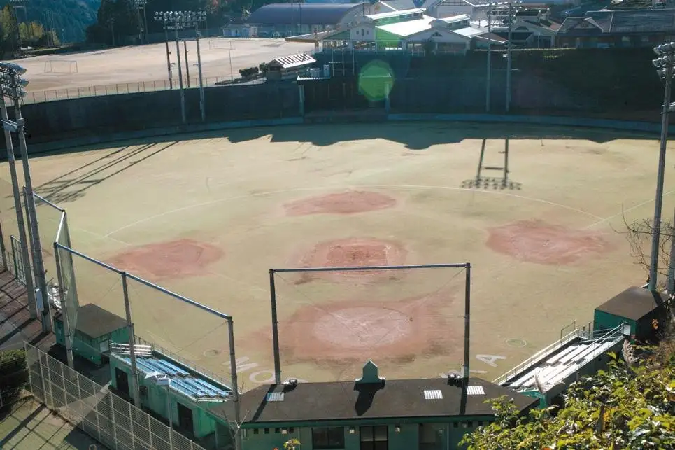
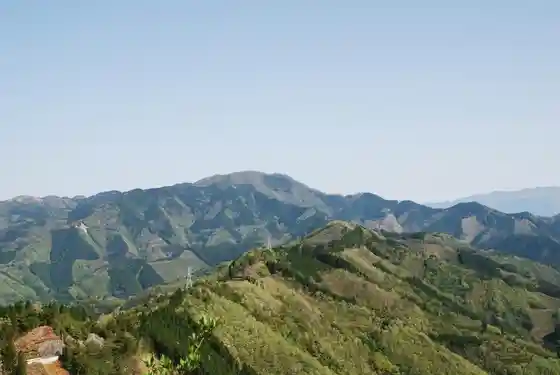
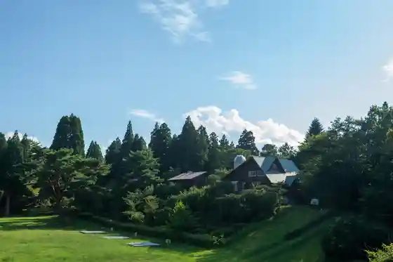
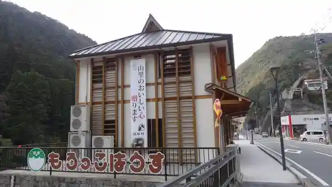

Japan / Miyazaki / Morotsuka
Morotsuka
Morotsuka · Miyazaki
Morotsuka
Highlighted on the Miyazaki map.

Sights
Morotsuka Yama
Morotsuka, Miyazaki · 0982-65-0178 · Official / source link

Ike no Kubo Green Park
Morotsuka, Miyazaki · 0982-65-0526 · Official / source link

Aki Matsurigoto Lookout (Dai 2 Lookout)
Morotsuka, Miyazaki · 0982-65-0178 · Official / source link
Morotsuka Sogo Sports Park (Yakyujo)
Morotsuka, Miyazaki · 0982-65-0072 · Official / source link
Morokkohausu (Morotsuka Tokusanhin Hambaijo)
Morotsuka, Miyazaki · 0982-65-0264 · Official / source link

Shiitake no Kan 21 Donko Tei
Morotsuka, Miyazaki · 0982-65-0178 · Official / source link
Morotsuka Tami Gym
Morotsuka, Miyazaki · 0982-65-0072 · Official / source link
Yama Suhara Dam
Morotsuka, Miyazaki · 0985-26-9007 · Official / source link
Ike no Kubo Green Park Kurosukantoriikosu
Morotsuka, Miyazaki · 0982-65-0072 · Official / source link
Morotsuka Sogo Sports Park (Tenisukoto)
Morotsuka, Miyazaki · 0982-65-0072 · Official / source link